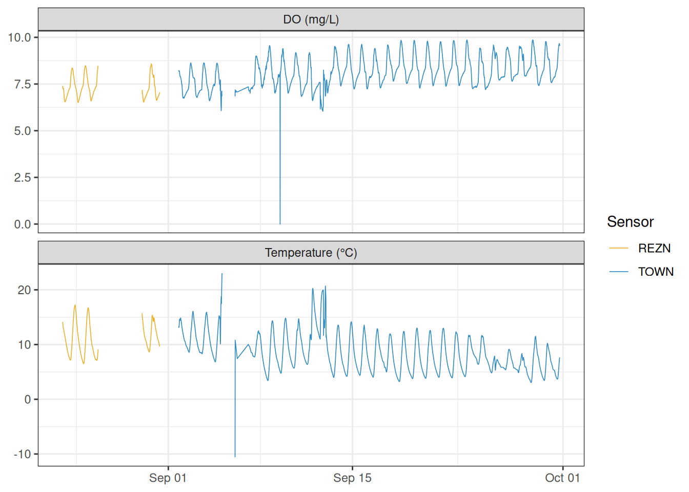
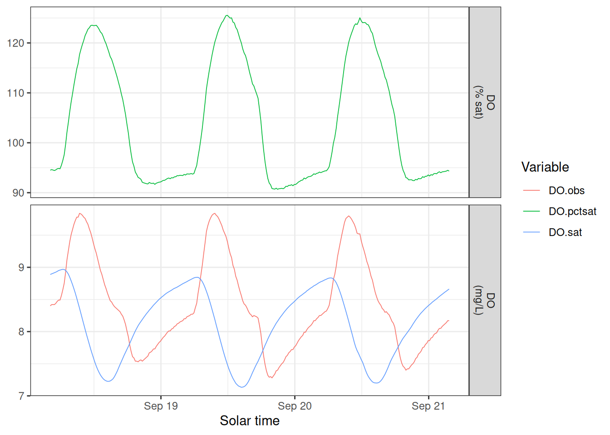
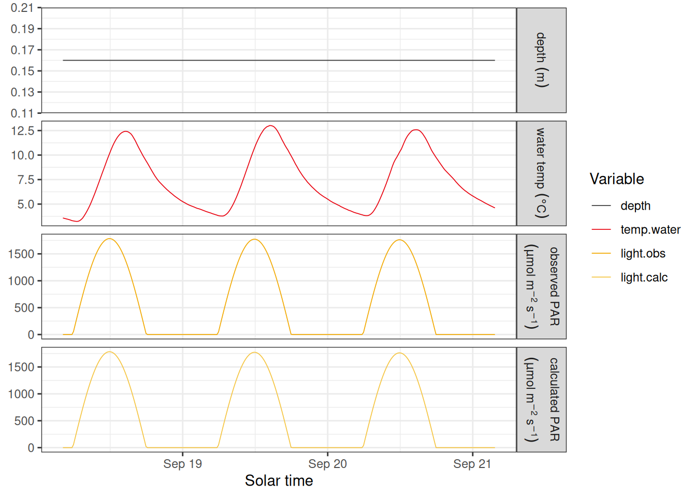

Introduction
Stream metabolism models estimate gross primary production and ecosystem respiration from continuous sensor records. The streamMetabolizer package fits these models, but the input data usually need a fair amount of preparation first: timestamps must be regular, times must be converted to mean solar time, site pressure must be realistic, and dissolved oxygen saturation must be calculated from the actual water temperature and pressure.
This vignette shows that preparation step by step using the built-in french_creek dataset.
| Column | Description |
|---|---|
solar.time |
Mean solar time (POSIXct, tz = “UTC”) |
DO.obs |
Observed dissolved oxygen (mg/L) |
DO.sat |
DO saturation at current conditions (mg/L) |
depth |
Water depth (m) |
temp.water |
Water temperature (°C) |
light |
Photosynthetically active radiation (µmol/m²/s) |
The data come from a field study on French Creek near Laramie, Wyoming, USA (Hotchkiss and Hall 2015). The runnable workflow uses modeled PAR from calc_par(). An optional chunk also shows how to retrieve observed light and surface pressure from NASA POWER when you are working interactively with an internet connection.
The french_creek dataset
data(french_creek)
french_creek <- french_creek |>
filter(lubridate::minute(datetime) %in% c(0, 15, 30, 45))
glimpse(french_creek)
#> Rows: 3,629
#> Columns: 4
#> $ datetime <dttm> 2012-08-23 23:15:00, 2012-08-23 23:30:00, 2012-08-23 23:45:0…
#> $ sonde <chr> "REZN", "REZN", "REZN", "REZN", "REZN", "REZN", "REZN", "REZN…
#> $ temp_C <dbl> 14.13, 13.86, 13.60, 13.36, 13.19, 13.02, 12.88, 12.76, 12.61…
#> $ DO_mgL <dbl> 7.40, 7.30, 7.27, 7.25, 7.26, 7.28, 7.25, 7.23, 7.12, 7.03, 6…The dataset covers 15-minute intervals from August 23 to September 30, 2012. Two sensors were deployed at the site: "REZN" ran from the start of the study through September 1 at 12:50 MDT, when it was replaced by "TOWN". The plot below shows the full record for both sensors.
french_creek |>
tidyr::pivot_longer(
c(temp_C, DO_mgL),
names_to = "variable",
values_to = "value"
) |>
mutate(variable = recode(
variable,
temp_C = "Temperature (°C)",
DO_mgL = "DO (mg/L)"
)) |>
ggplot(aes(datetime, value, color = sonde)) +
geom_line(linewidth = 0.3, alpha = 0.8) +
facet_wrap(~variable, ncol = 1, scales = "free_y") +
scale_color_manual(values = c(REZN = "#E69F00", TOWN = "#0072B2")) +
labs(x = NULL, y = NULL, color = "Sensor") +
theme_bw()
#> Warning: Removed 272 rows containing missing values or values outside the scale range
#> (`geom_line()`).
The REZN sensor shows a cluster of anomalous negative temperature values near the end of its deployment. For the rest of this vignette we filter to the TOWN sensor, which has the longer and cleaner record.
Remove anomalous values
Negative water temperatures are physically impossible for liquid water and indicate sensor malfunction. DO values <= 5 mg/L are improbable and may indicate sensor malfunction. We’ll remove those rows.
Ensure even timesteps
streamMetabolizer requires evenly spaced data. even_timesteps() fills any gaps with NA rows so the interval is consistent.
french_creek <- even_timesteps(french_creek)Convert datetime to solar time
streamMetabolizer works in mean solar time, which shifts UTC by the longitude-based offset so that noon falls roughly when the sun is highest. We define site constants once and reuse them throughout.
site_latitude <- 41.329678
site_longitude <- -106.359058
french_creek <- french_creek |>
mutate(
solar.time = convert_to_solar_time(
datetime,
longitude = site_longitude
)
) |>
filter(solar.time >= as.POSIXct("2012-09-18 04:05:58") &
solar.time <= as.POSIXct("2012-09-21 03:50:58"))Calculate modeled light (PAR)
calc_par() returns photosynthetically active radiation in µmol/m²/s based on the solar geometry at the site. It takes mean solar time as input.
Estimate barometric pressure
French Creek sits at roughly 3,205 m above sea level. Using standard sea-level pressure (101.325 kPa) would overpredict O2 saturation, so we adjust sea-level pressure to the site elevation with correct_bp().
french_elev_m <- 3205
french_data <- french_creek |>
mutate(
bp_kPa = correct_bp(
station_bp = 101.325,
air_temp = temp_C,
station_elev = 0,
site_elev = french_elev_m
),
light.obs = light.calc
)Optional: get pressure and observed light from NASA POWER
get_nasa_data() can download NASA POWER surface pressure (PSC) and shortwave irradiance (ALLSKY_SFC_SW_DWN) for the site. It converts shortwave irradiance to observed PAR as light.obs and interpolates the NASA fields to the same timestamps as the logger data.
nasa_dat <- get_nasa_data(
data = french_creek,
datetime_col = "datetime",
latitude = site_latitude,
longitude = site_longitude,
elev_m = french_elev_m,
params = c("PSC", "ALLSKY_SFC_SW_DWN")
) |>
select(datetime = dateTime, bp_kPa = PSC, light.obs)
french_data <- french_data |>
select(-bp_kPa, -light.obs) |>
left_join(nasa_dat, by = "datetime")You can retrieve the elevation directly from the USGS Elevation Point Query Service when you do not already know it:
french_elev_m <- get_usgs_elev(
latitude = site_latitude,
longitude = site_longitude,
units = "Meters"
)Calculate O2 saturation
With site-adjusted pressure and water temperature, calc_O2sat() returns the DO saturation concentration in mg/L.
french_data <- french_data |>
mutate(
DO.sat = calc_O2sat(
temp_water = temp_C,
atmo_press = bp_kPa,
units = "kPa"
)
)
summary(french_data$DO.sat)
#> Min. 1st Qu. Median Mean 3rd Qu. Max.
#> 7.133 7.624 8.237 8.127 8.622 8.968Assemble the final tibble
The final step restructures the data and retains both observed and calculated light.
sm_input <- french_data |>
transmute(
solar.time = solar.time,
DO.obs = DO_mgL,
DO.sat = DO.sat,
depth = 0.16,
temp.water = temp_C,
light.obs = light.obs,
light.calc = light.calc
)
head(sm_input)
#> # A tibble: 6 × 7
#> solar.time DO.obs DO.sat depth temp.water light.obs light.calc
#> <solar_dt> <dbl> <dbl> <dbl> <dbl> <dbl> <dbl>
#> 1 2012-09-18 04:09:33 8.4 8.89 0.16 3.58 0 0
#> 2 2012-09-18 04:24:33 8.42 8.90 0.16 3.54 0 0
#> 3 2012-09-18 04:39:33 8.42 8.91 0.16 3.5 0 0
#> 4 2012-09-18 04:54:33 8.42 8.92 0.16 3.46 0 0
#> 5 2012-09-18 05:09:33 8.44 8.93 0.16 3.42 0 0
#> 6 2012-09-18 05:24:33 8.47 8.94 0.16 3.37 0 0
sm_input |>
mutate(DO.pctsat = 100 * DO.obs / DO.sat) |>
tidyr::pivot_longer(
c(DO.obs, DO.sat, DO.pctsat),
names_to = "variable",
values_to = "value"
) |>
mutate(units = ifelse(variable == "DO.pctsat", "DO\n(% sat)", "DO\n(mg/L)")) |>
ggplot(aes(solar.time, value, color = variable)) +
geom_line(linewidth = 0.3) +
facet_grid(units ~ ., scales = "free_y") +
labs(x = "Solar time", y = NULL, color = "Variable") +
theme_bw()
labels <- c(
depth = "depth~(m)",
temp.water = "water~temp~(degree*C)",
light.obs = "atop(observed~PAR, (mu*mol~m^{-2}~s^{-1}))",
light.calc = "atop(calculated~PAR, (mu*mol~m^{-2}~s^{-1}))"
)
sm_input |>
tidyr::pivot_longer(
c(depth, temp.water, light.obs, light.calc),
names_to = "variable",
values_to = "value"
) |>
mutate(
variable = ordered(
variable,
levels = c("depth", "temp.water", "light.obs", "light.calc")
)
) |>
ggplot(aes(solar.time, value, color = variable)) +
geom_line(linewidth = 0.3) +
facet_grid(
variable ~ .,
scales = "free_y",
labeller = ggplot2::as_labeller(labels, label_parsed)
) +
scale_color_manual(
values = c(
depth = "#333333",
temp.water = "#e8000d",
light.obs = "#f2a900",
light.calc = "#f5c542"
)
) +
labs(x = "Solar time", y = NULL, color = "Variable") +
theme_bw()
To fit a model with streamMetabolizer::metab(), choose either light.obs or light.calc and rename that column to light. See the streamMetabolizer documentation for details on model fitting and interpreting metabolism estimates.